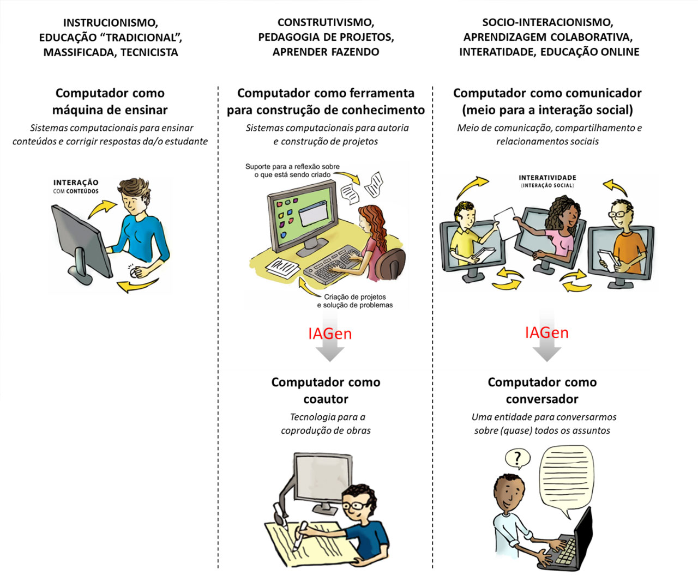
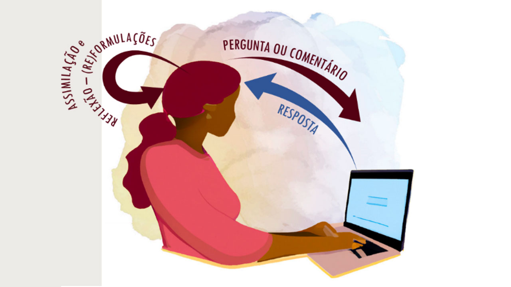
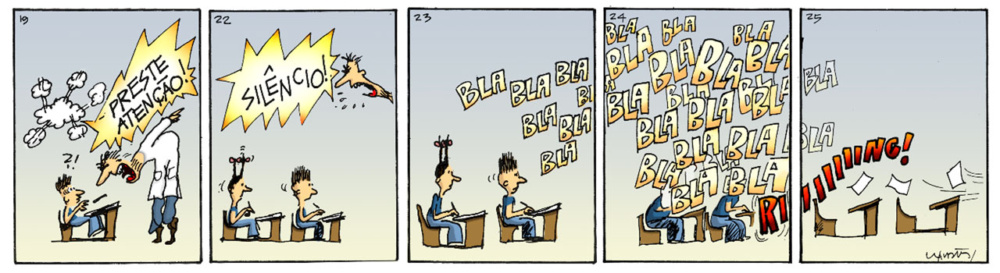
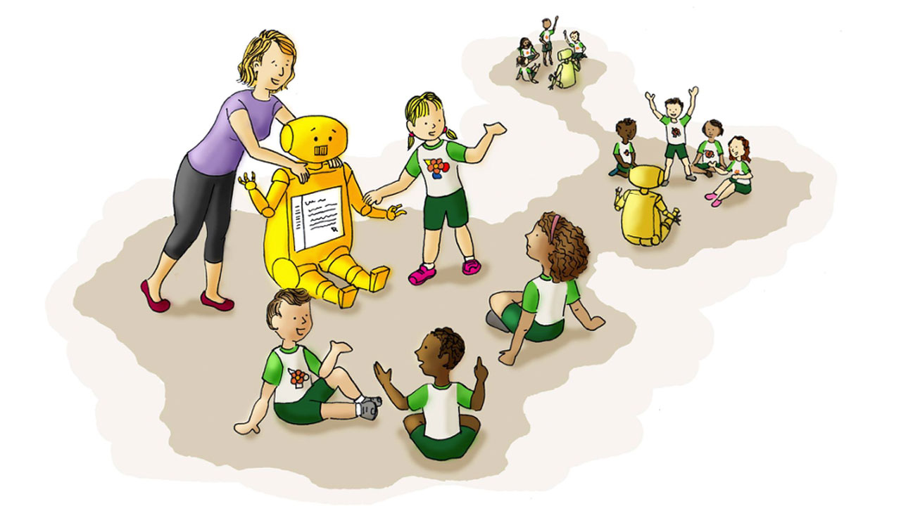
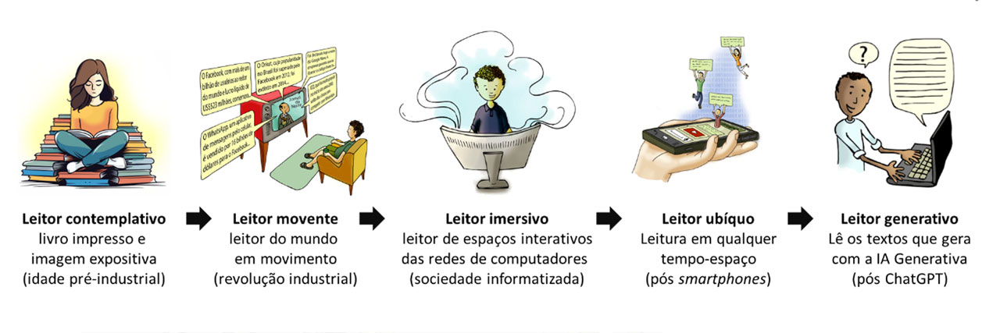

Módulo 5 . Aula 3
Inteligência Artificial: potencialidades e riscos para a educação
Módulo 5 . Aula 3
Inteligência Artificial: potencialidades e riscos para a educação
 Objetivos da
aula
Objetivos da
aula
Nesta aula você compreenderá criticamente o papel da Inteligência Artificial Generativa (IAGen) na educação, reconhecendo seu potencial para ampliar a criação, a colaboração e a aprendizagem, promovendo uma educação aberta, ética e humanizadora.
Ao final desta aula você deverá ser capaz de:
- Caracterizar as finalidades da IAGen no contexto educacional.
- Defender que a IAGen não é uma máquina de ensinar.
- Avaliar o potencial pedagógico da IAGen para a conversação e a coautoria.
- Explicar a emergência de um novo perfil cognitivo decorrente do uso da IAGen.
- Discutir possíveis reconfigurações da educação decorrentes do uso da IAGen.
Finalidades da IAGen na educação
A Inteligência Artificial Generativa (IA Generativa, IAGen ou IAG), tecnologia capaz de gerar conteúdo a partir de descrições textuais, também chamadas de prompts, vem sendo utilizada para diferentes finalidades no contexto educacional: estudar-aprender, ensinar, escrever, pesquisar, imaginar, entre outras. Essas finalidades são relevantes para os diferentes níveis e modalidades educacionais, do Ensino Fundamental à Pós-graduação, da educação presencial à educação a distância.
A seguir apresentamos alguns exemplos práticos de como a IAGen tem sido integrada às rotinas de estudo e produção textual, promovendo novas experiências de aprendizagem e autoria.
É possível utilizar a IA gerativa de texto para conhecer, perguntar, pedir exemplos, tirar dúvidas, questionar determinadas afirmações etc. Por exemplo, ao pedirmos ao ChatGPT que explique as diferenças entre as teorias comportamentais e cognitivas, ele gerou uma caracterização resumida de cada teoria e apresentou as principais diferenças entre elas. Quando perguntamos quais eram os conceitos-chave da Teoria Ator-Rede, ele elaborou um quadro com a definição dos principais termos. Quando queremos investigar o significado ou a etimologia de uma palavra, perguntamos primeiro a uma IAGen, como o ChatGPT ou o Gemini, e depois, se necessário, investigamos em outras fontes de informação. A IAGen se tornou uma aliada da nossa aprendizagem cotidiana.
É possível pedir que a IAGen dê uma aula sobre um determinado assunto, crie um roteiro de estudo, faça um questionário sobre os pontos mais importantes do conteúdo em estudo, proponha exercícios, corrija os exercícios feitos etc. A IAGen gera conteúdo em função das solicitações do estudante, possibilitando aprendizagem dialogada, interativa e contextualizada, o que vem modificando a rotina de estudo e aprendizagem.
A IAGen reconfigurou as práticas de escrita. Antes, a escrita costumava ser um processo solitário; agora é possível escrevermos na companhia da IAGen, em um processo de parceria. O bloqueio criativo não existe mais; basta pedir a essa tecnologia para gerar um roteiro ou um primeiro rascunho do texto que se deseja produzir, e talvez um segundo, terceiro e quantos rascunhos mais forem necessários. Os textos gerados nos ajudam a refletir sobre o conteúdo que desejamos escrever, fornecem ideias e diferentes pontos de vista que ampliam nossa criatividade. Às vezes apresentamos apenas uma ideia ou argumento e pedimos que ela construa um parágrafo sobre o assunto. Podemos pedir que ela termine a frase ou o parágrafo que estamos escrevendo. Quando nos falta uma palavra, pedimos sugestões para preencher a lacuna que deixamos na frase.
É possível utilizar a IAGen como uma parceira para a escrita de textos acadêmicos, mas sem deixá-la pensar e escrever por nós. Quando produzimos um texto, podemos pedir à IAGen um feedback e, em seguida, revisamos o texto com ela.
O ChatGPT corrige erros e oferece sugestões para a melhoria da redação — obviamente, não acatamos todas as sugestões, mas esse trabalho de revisão nos ajuda a repensar o texto que desejamos escrever. Para nos ajudar a visualizar as modificações que o ChatGPT propõe, utilizamos a extensão do navegador editGPT.
A IAGen é capaz de fazer boas traduções. Ela adapta o texto ao contexto cultural do idioma de destino, o que é especialmente útil para textos acadêmicos que serão publicados em revistas internacionais, para as quais a precisão e a fluidez da linguagem são fundamentais.
A IAGen tem se mostrado útil para apoiar a planejar uma aula, gerando apresentações, situações didáticas, exemplos, casos, exercícios, questões de múltipla escolha, avaliações, critérios e rubricas de avaliação etc. Ela também pode ser útil para apoiar a correção de exercícios simples e sugerir revisões em redações. Contudo, não recomendamos a completa automação da avaliação, pois esse processo precisa ser efetivado por especialistas humanos, que têm conhecimento, experiência, discernimento e sensibilidade necessários para uma avaliação adequada, especialmente quando as respostas não são binárias ou estritamente corretas/incorretas.
A IAGen pode apoiar a realização de pesquisas científicas, não só na etapa da escrita de um relatório, mas em todo o processo. Ela pode ser útil para apoiar na elaboração do desenho da pesquisa, na construção de documentos auxiliares (projeto de pesquisa, TCLE etc.), na elaboração de instrumentos de pesquisa (questionários e roteiros de entrevista), na análise dos dados, entre outras atividades.
Durante uma pesquisa científica, é possível anexar ao prompt uma planilha com dados e pedir visualizações e análises. Durante a etapa de revisão de literatura, podemos demandar que a IAGen compare dois artigos. Assim como os mecanismos de busca na web e nas bases de artigos científicos transformaram o modo como revisamos a literatura, a IAGen irá reconfigurar várias práticas do fazer científico.
“Imaginar” vem do latim imaginari e significa formar uma imagem mentalmente; a IAGen tem a capacidade de imaginar, de gerar imagens computacionalmente. No contexto educacional, a geração de imagens pode ser útil para ilustrar uma apresentação, representar um conceito, ilustrar um conteúdo, criar personagens e cenas de uma história, fazer um meme, entre outras produções visuais de interesse de estudantes, docentes e conteudistas. Por exemplo, digitamos o prompt “crie uma imagem sobre Educação e Inteligência Artificial”, e o GPT-4o respondeu:
“Aqui está a imagem que você solicitou sobre Educação e Inteligência Artificial. Ela mostra uma sala de aula moderna onde os alunos interagem com ferramentas alimentadas por IA, exibindo um ambiente futurista e realista que destaca como a IA aprimora a experiência educacional.”
Além da capacidade da IAGen de gerar imagens, alguns modelos têm a habilidade de lidar com múltiplas linguagens, como texto, vídeos, mapas mentais, história em quadrinhos, planilhas, páginas web etc. A multimodalidade da IAGen amplia as possibilidades de uso na educação.
Concepções pedagógicas do uso da IAGen na educação
As tecnologias são projetadas e usadas em educação com intencionalidade pedagógica. Antes da IAGen, reconhecíamos três principais concepções didático-pedagógicas para o desenvolvimento e uso de sistemas computacionais em educação: como máquina de ensinar, como ferramenta para a construção de conhecimentos e como meio de comunicação. Com a IAGen, consolidaram-se duas novas concepções para o uso do computador na educação: como conversador e como coautor.
Diferentes concepções pedagógicas para o uso da computação na educação

Máquina de Ensinar é qualquer tecnologia com algum nível de automação desenvolvida para ensinar algo explicitamente a alguém, apresentando conteúdos e dando feedback sobre as ações do estudante.
Uma máquina de ensinar atua como se fosse um professor. Esse tipo de máquina é resultante de um esforço para a automação do ensino, um modo de efetivar a arte de ensinar sem professores.
Os primeiros esforços para criar uma máquina de ensinar datam do início da Revolução Industrial, que incitou a automatização de todos os processos de trabalho com base na racionalidade técnico-científica visando produzir mais rapidamente, com menor custo e o mínimo de interferência humana. Poucos anos depois de os computadores serem desenvolvidos, já começaram a utilizá-los como máquinas de ensinar em universidades e escolas dos Estados Unidos nas décadas de 1950 e 1960.
“Essa modalidade pode ser caracterizada como uma versão computadorizada dos métodos tradicionais de ensino. As categorias mais comuns dessa modalidade são os tutoriais, exercício-prática, jogos e simulação.”
(Valente, 1993, p. 7)
A IAGen não é uma “máquina de ensinar”, pois não quer ensinar algo explicitamente a seu usuário, não foi projetada para esse propósito, não tem intencionalidade pedagógica. Por exemplo, a IAGen difere-se do Duolingo, que foi projetado para ensinar línguas; também se difere de um tutorial, que segue um roteiro para a apresentação de conteúdos e propõe exercícios de fixação que são corrigidos automaticamente para dar feedback e controlar o andamento da aprendizagem. A IAGen não foi desenvolvida para seguir um currículo, não tem um plano de ensino a cumprir, não decidirá quais conteúdos serão apresentados na próxima interação, não testará o usuário, não dará nota nem dirá palavras de incentivo pelo que o usuário demonstra ter aprendido. Entretanto, é possível criar sistemas computacionais baseados na IAGen que tenham o objetivo de ensinar, sendo caracterizados como máquinas de ensinar, mas essa será uma aplicação da IAGen entre inúmeras outras possíveis.
A IAGen, por si, não foi desenvolvida para ser especificamente uma máquina de ensinar.
Na década de 1960, Seymour Papert ousou propor que crianças programassem computadores, tarefa que era realizada apenas por cientistas da computação, engenheiros e matemáticos. Ele desenvolveu a linguagem de programação Logo para que crianças comandassem uma representação de tartaruga na tela. Essa linguagem serviu de base para o desenvolvimento do Scratch, que é adotado em diversas escolas de todo o mundo para o ensino de programação voltado a crianças e jovens.
Papert foi orientado por Jean Piaget e, inspirado pelo construtivismo, propôs o construcionismo considerando que as crianças aprendem melhor quando estão engajadas na construção de artefatos significativos, como um programa de computador, uma peça de arte ou outra coisa de seu próprio interesse. A abordagem pedagógica de Papert está alinhada à pedagogia de projetos, baseada na aprendizagem ativa, exploratória e contextualizada, diferindo-se da aprendizagem baseada na assimilação e repetição de informações descontextualizadas. Nessa situação, o computador é caracterizado como uma “ferramenta educacional”, usado para apoiar a resolução de problemas e o desenvolvimento de projetos:
“O computador não é mais o instrumento que ensina o aprendiz, mas a ferramenta com a qual o aluno desenvolve algo.”
(Valente, 1993, p. 12)
A IAGen não é uma espécie de ferramenta utilitária, como um editor que faz exatamente o que o usuário comandou, cujo resultado para cada ação pode ser previsto; a IAGen gera conteúdo novo como resposta ao prompt.
IAGen não é auxiliar, não é mera ferramenta, mas sim é ativa e propositiva no processo de desenvolvimento de novas obras com seu usuário. Temos considerado essa tecnologia como uma “coautora” quando suas respostas influenciam significativamente o conceito e o resultado da obra que o usuário está produzindo.
O uso pedagógico dos computadores como um meio de comunicação e interação entre as pessoas se tornou possível com o desenvolvimento das redes de computadores, o que se consolidou especialmente após a abertura da internet para uso comercial em meados da década de 1990. A IAGen não é uma tecnologia de comunicação pela internet, não é um suporte à interação social, não é um meio para conversar com outro humano. Ela própria conversa conosco, é um agente de conversação que interage com cada estudante ou professor.
O uso do computador como meio de interação social alavancou a educação não presencial (a distância, remota, híbrida, aberta, massiva etc.), sendo que a Educação a Distância se tornou hegemônica no ensino superior brasileiro.
Assim como a internet, a IAGen é uma tecnologia inovadora e um fenômeno cultural que pode disparar reconfigurações significativas em nosso sistema educacional, conforme discutiremos nas próximas seções.
IAGen como tecnologia da conversação
A IAGen pode ser utilizada para estabelecer conversas com humanos, como fazem o ChatGPT e o Gemini, que estão sempre disponíveis para conversar, dispostos a explicar quase tudo e a tirar nossas dúvidas. Ao nos responder, apresentam detalhes como se estivessem nos ensinando algo. Ao resolver um problema, explicam os passos que devem ser seguidos, como se quisessem nos explicar ou mostrar o raciocínio a ser empregado. Que mudanças na educação serão decorrentes da existência dessa tecnologia de conversação, disponível 24/7, gratuita, sempre disposta a nos ajudar a compreender (quase) tudo sobre o que temos curiosidade ou que nos obrigam a aprender?
Para o fundador da Khan Academy, o advento do ChatGPT representa o início da “maior transformação positiva que a educação já viu”:
“Estamos no limite de usar a IA para, provavelmente, a maior transformação positiva que a educação já viu. A forma como estamos fazendo isso é dando, a cada estudante do planeta, uma inteligência artificial, que é um professor particular extraordinário. […] Isso poderia transformar um aluno mediano em um aluno excepcional, pode transformar um estudante abaixo da média num estudante acima da média.”
(Khan, 2023, 0:33 - 2:01)
Sabemos que um professor particular pode ajudar no processo de aprendizagem, mas o problema é o custo da hora-aula. Com a IAGen, todos poderão ter, gratuitamente, uma tecnologia que desempenha parte do papel realizado por um professor particular. Entretanto, as vantagens da IAGen só podem ser obtidas por quem estiver disposto a interagir proativamente com essa tecnologia. É diferente de chegar a uma aula e ficar ouvindo o que um professor preparou para a turma, pois a IAGen não reage ao silêncio. Essa tecnologia não quer nos agenciar, não passa exercícios ou atividades, não passa dever de casa, não planeja os conteúdos que serão ensinados em cada aula, não demanda que prestemos atenção, não quer nos fazer resolver um problema ou debater um assunto. Podemos até identificar alguma semelhança com a docência pelo “tom professoral” de suas respostas, mas essa tecnologia não foi projetada para atuar no lugar de um professor particular. Ela se assemelha mais a uma pessoa esperta em muitos assuntos e sempre disposta para a conversação.
A interação com a IAGen pode ser caracterizada como um tipo de conversação com potencial para disparar em nós, humanos, processos formativos intensos, pois as respostas geradas podem nos fazer aprender algo, provocar reflexões e reformulações, o que pode provocar novas dúvidas e nos levar a fazer novas perguntas, retroalimentando a conversação com a máquina.

Na educação tradicional, a conversação nem sempre é bem-vinda; às vezes é inibida, tratada como perda de tempo, coisa de pouca importância. A tradição é o docente deter a palavra pela maior parte do tempo, mantendo-se na centralidade da conversação durante a aula, não deixando muito espaço para os estudantes falarem. Essa centralidade docente é parte de resquícios do ideal pedagógico da escola moderna que nos formou e que ainda se faz presente em muitas das nossas aulas na atualidade.
O silenciamento dos estudantes durante a aula

Promove-se o silenciamento dos estudantes quando se acredita que eles não têm algo a contribuir e que suas falas irão atrapalhar a exposição dos conteúdos, deixarão a turma dispersa e impossibilitarão que a aula transcorra como havia sido planejada (geralmente se planeja uma aula expositiva, com pouca ou nenhuma conversação com a turma e dos estudantes entre si). A não conversação é o desperdício de toda uma experiência de encontro com o outro, como ele pensa, se apresenta, se constitui, se compreende e compreende o mundo, atribui sentidos e reflete sobre as coisas.
Queremos desconstruir essa ideia da conversação como “perda de tempo” no processo formativo, seja com o professor, com os colegas de turma ou mesmo com a IAGen.
Conversar é renunciar ao egocentrismo intelectual para experimentar outras formas de pensar e conhecer, o que demanda negociar sentidos, que, por sua vez, leva a uma aprendizagem profunda, complexa e significativa.
Durante a conversação, as palavras do outro têm o potencial de produzir deslocamentos no nosso maquinário subjetivo, acionam gatilhos e fazem pulsar reflexões, estranhamentos e incertezas, que às vezes nos colocam em suspensão, em um espaço desconhecido, de inquietude diante do qual nos fazem parar um instante. Aí está a riqueza da conversação: o intercâmbio com o outro, com a diferença, que nos afeta e nos faz ver aquela realidade de outro modo.
Paulo Freire (1970) já havia nos ensinado que a educação autêntica se faz pelo diálogo de “A” com “B”, dos professores com os alunos. Não pode ser reduzida a meros comunicados de um professor para os alunos (de “A” para “B”); nessa condição, os alunos só podem receber pacientemente o conteúdo, memorizá-lo e repeti-lo, o que é uma visão equivocada e distorcida de educação. A educação autêntica é dialógica.
Será que a IAGen, com sua capacidade conversacional, promoverá uma educação mais dialógica? Será que a conversação entre os humanos será mais valorizada em nossas aulas? Ou será o contrário: a conversação com a IAGen, de tão interessante, fará as pessoas renunciarem às conversas com professores e colegas de turma? Será que essa tecnologia promoverá a educação domiciliar (homeschooling) em nosso país? Será que a IAGen promoverá a educação aberta?
Possibilidade de conversação com a IAGen em contextos formacionais

Essas questões estão em aberto. Torcemos para que a IAGen seja usada para somar às possibilidades de conversação e não para isolar as pessoas em conversas exclusivas com as máquinas. Consideramos importantes todas as possíveis combinações de conversação que um estudante pode estabelecer: com professores, com outros estudantes, grupos, turmas e com a IAGen. Esperamos que a IAGen seja utilizada para somar e não para substituir.
IAGen como tecnologia de coautoria
A IAGen não pode ser considerada autora, pois ela não tem autonomia, nunca age sozinha, sempre depende do prompt humano para gerar algo. No máximo, ela pode ser caracterizada como uma coautora, porque sempre atua em parceria com um autor humano. Essa ação conjunta é o que denominamos autoria híbrida humano-IA.
O processo de autoria híbrida é interativo. Nós, humanos, podemos ter a ideia de um texto, imagem, música etc. Com uma ideia em mente, demandamos que a IAGen gere algo sobre aquela ideia. O conteúdo gerado pela IAGen pode conter informações não pensadas anteriormente por nós, o que nos leva a conhecer, refletir e reformular nossas compreensões, por isso aprendemos com esse processo.
Em função do resultado gerado, podemos editar a obra ou fazer novos pedidos, seja para a IA gerar variações, revisões ou mesmo outra coisa. O novo resultado será novamente reconsiderado por nós, que lhe atribuiremos sentido, podendo ser editado, revisado ou reformulado. Esse processo segue com a ação ativa tanto do humano quanto da IAGen em uma parceria que exige interações, atuação conjunta de uma pessoa com a IA.
Com o avanço das tecnologias de IAGen, iniciamos a era da autoria híbrida humano-IA. Como esse novo cenário sociotécnico poderá reconfigurar a educação?
O sistema educacional, tradicionalmente, não valoriza a autoria dos estudantes. Estamos acostumados a passar atividades para o estudante responder sobre um determinado assunto de acordo com o conteúdo do livro-texto ou resolver um problema seguindo uma fórmula, sem muito espaço para a criação. Para superar as atividades não autorais de reprodução e releitura dos conhecimentos acumulados pela sociedade, precisamos arquitetar situações de aprendizagem para que o discente se autorize a criar e se tornar autor. Podemos arquitetar atividades que levem o estudante a se posicionar criticamente e a criar, narrando o próprio cotidiano, suas próprias experiências pessoais, explicitando sua compreensão, seus modos de ver e sentir o mundo, de (re)significá-lo à sua maneira, a seu modo singular. Formar para a autoria é autorizar a manifestação da subjetividade de pensamentos, sentimentos e lembranças.
A autoria é um processo de investigação e descoberta de nós mesmos, de quem somos, de como queremos nos posicionar no mundo e o que desejamos dizer.
Autoria híbrida não é assumir a autoria apenas para si, invisibilizando a influência da IAGen sobre o conceito, o processo e o resultado da obra. Autoria híbrida também não é simplesmente reproduzir o que a IA gerou, o que se caracterizaria em uma espécie de plágio. Para fazermos um uso ético da IAGen, precisamos reconhecer que a autoria da obra é resultante da parceria entre humano e IA. Usar a tecnologia para a cocriação, sem entregar a mente e a voz para a IA pensar e se expressar por nós, é fazer um uso responsável dessa tecnologia. Aprender com o processo de coautoria com a IAGen é fazer uso proveitoso dessa tecnologia para a formação de si. Saber coautorar com a IAGen de maneira ética, responsável e proveitosa para a formação requer letramento em IA — o que podemos apoiar nossos estudantes para desenvolver.
Para trabalhar em coautoria com a IAGen é preciso aprender a fazer boas perguntas, refinar o prompt, demandar tarefas, avaliar e fazer a curadoria dos resultados, editá-los, verificar as informações e fundamentá-las em fontes confiáveis, atribuir sentido e nos responsabilizarmos pelo uso da obra resultante da autoria híbrida.
Refletindo sobre como a IAGen impacta a criatividade humana, foram identificados quatro cenários:
É quando ocorre uma parceria entre a inteligência humana e a IA generativa, com reconhecimento das contribuições de cada parte. Essa configuração vem sendo chamada de criatividade aumentada, porque produz resultados que não seriam possíveis apenas por humanos ou por IAGen. Esse cenário é o que denominamos de autoria híbrida humano-IA.
É a criação de obras sem fazer uso de tecnologias de IAGen. O processo criativo puramente humano poderá ser reconhecido como uma marca da qualidade da obra em função de sua singularidade e autenticidade, chamada de “efeito artesanal” ou “criatividade antiquada”.
É quando a IAGen é utilizada sem ser citada, para que a própria pessoa pareça produtiva e criativa. O caráter ético dessa forma de criação necessita ser debatido pela sociedade.
Algumas pessoas poderão ficar desmotivadas para realizar ações criativas por não se sentirem capazes de criar no mesmo nível que a IA e, assim, terceirizarão a criação de conteúdo para a IAGen. Esse é o cenário em que as pessoas entregam suas mentes e vozes para a IAGen pensar e se expressar por elas.
Nossa aposta é em uma formação para autoria híbrida entre humanos e IAGen, na perspectiva da cocriação, parceria, fazer junto, como caracterizado pelo cenário 1. Cabe à educação formar para a autoria de modo hibridizado com as tecnologias geradoras de conteúdo, atentando para o fato de que plágio e desistência (cenários 3 e 4) também são possíveis, mas não são potencializadores do desenvolvimento humano.
Novo perfil cognitivo
A IAGen já começou a transformar nosso sistema educacional, nossa cultura e possivelmente até nossa cognição. Lucia Santaella (2004; 2013) reconhece uma mudança no perfil cognitivo das pessoas em função das tecnologias utilizadas em determinados períodos de nossa história. Para Santaella, as tecnologias de produção de signos e linguagens típicas de cada época, como livro, jornal, cinema, televisão e computadores, forjam leitores com diferentes perfis cognitivos.
Evolução do perfil cognitivo dos leitores

Compreendendo que a cognição humana se modifica pelo uso das tecnologias semióticas, hoje já nos questionamos sobre a possibilidade da emergência de um novo perfil cognitivo de leitor em decorrência do uso da IAGen. Os estudantes relatam que estão utilizando muito a IAGen como uma extensão da própria inteligência; passaram a utilizá-la para pensar junto, de modo hibridizado. O uso “rotineiro”, “constante”, inventando “novas rotinas com o ChatGPT” a ponto de “não estudar sem o ChatGPT” — conforme declarado por muitos estudantes — nos levou a reconhecer a emergência do perfil cognitivo que denominamos “leitor generativo”, ou seja, aquele que lê os textos que gera com a IAGen, assim como também as imagens, vídeos e sons, entre outras linguagens utilizadas na geração de obras.
Um estudante de Computação nos declarou: “Uso o Copilot, hoje codifico igual a um deus e aprendo demais com o GPT-4.” Compreendemos que esse estudante, ao afirmar que codifica “igual a um deus”, já se tornou um programador-híbrido, e não desistirá de programar em parceria com a IAGen porque reconhece que se tornou capaz de programar muito melhor com ela do que se estivesse programando sozinho, reconhecendo os benefícios dessa parceria para sua aprendizagem. Esse novo perfil cognitivo foi rebatizado por Santaella como “leitor iterativo”:
“Um novo tipo de leitor está nascendo, seguindo a teoria que foi desenvolvida sobre os perfis semiótico-cognitivos dos quatro tipos anteriores de leitores — contemplativo, em movimento, imersivo e ubíquo.”
(Santaella 2004, 2018)
“[...] um quinto tipo de leitor agora emerge, o qual estou chamando de ITERATIVO.”
(Santaella, 2024, n.p., tradução nossa)
A educação está sendo reconfigurada em tempos de cibercultura. Nas últimas décadas, temos acompanhado a emergência e a consolidação de novas modalidades educacionais possibilitadas pelo digital em rede, como a educação a distância, remota, híbrida, massiva e aberta. Não podemos ignorar as reconfigurações que estão em curso ou que ainda serão promovidas pela popularização da IAGen. Independentemente da modalidade ou nível de ensino, a IAGen mostra-se útil em diversas atividades relacionadas ao processo formacional, seja na aprendizagem, na mediação docente, na elaboração dos conteúdos didáticos, na gestão educacional ou nas políticas públicas de educação.
Essa tecnologia já começou a transformar nosso sistema educacional, nossa cultura como um todo e até mesmo nossa cognição.
Promover educação para o uso da IAGen e efetivar a educação com o uso dessa tecnologia são desafios importantes do nosso tempo. A inserção da IAGen na educação, nas múltiplas modalidades e contextos formativos, ainda está em curso. Nesta aula buscamos teorizar o uso da IAGen na educação, considerando suas múltiplas finalidades, especialmente como uma tecnologia para conversação e coautoria, e alguns de seus possíveis desdobramentos.
Não pretendemos apresentar respostas definitivas, mas tecemos algumas reflexões considerando que a realidade é complexa e o futuro da educação está sendo forjado por cada um de nós e pelas relações que estabelecemos com essa nova tecnologia digital.
Como citar esta aula:
PIMENTEL, Mariano; CARVALHO, Felipe. Inteligência Artificial Generativa na Educação Aberta: potencialidades e riscos. Programa de Formação Modular em Ciência Aberta. Módulo 5. Educação Aberta e Recursos Educacionais Abertos Aula 3. 1. ed. Rio de Janeiro: Fiocruz, 2025. Disponível em: https://mooc.campusvirtual.fiocruz.br/rea/ciencia-aberta/modulo5/aula3.html.